Get Started With Portainer¶
TL;DR¶
Nowadays everybody talking and writing about containers, Docker, Kubernetes, OpenShift, etc. I don't want to explain here what are these meaning, instead give some practical use cases. I'm always testing my solutions at home with low cost HWs.
I have an article about installing single node Kubernetes cluster, but now I step back to Docker containers. This is because deploying a container orchestrator not always the goal. This article could be useful for home users, or developers who want learn about containers.
Use Containers Instead Of Virtual Machines¶
What is wrong with installing software to your Laptop or Desktop? Sooner or later you will end up in having a lot of unnecessary software on your machine. Or you have to install various software with various dependencies which could not be resolved. There are so many possibilities to separate a test environment from your host machine:
All of them has the advantages and disadvantages. Proxmox is really good if you have a separate hardware to install. It can handle LXC Containers and HW virtualization as well. VirtualBox is an easy-to-use Virtualization platform. It can be installed on Linux, Windows and even on MAC.
But all of these have bigger footprint on you host hardware than Docker.
Let's see how easy to try a software with Docker, for example Ghost blog:
Link: https://hub.docker.com/_/ghost
docker run -d --name some-ghost \
-p 3001:2368 \
-v /path/to/ghost/blog:/var/lib/ghost/content \
ghost:alpine
In some seconds you can access Ghost on http://localhost:3001. I can't imagine easier or faster way to try out something.
Note
The situation is more complicated, of coures, if you want to use external database, redis, etc in conjungtion with Ghost. But if you only want to test/try out Ghost it is the fastest way I think.
In most cases you can find a really good documentation about how to use a software with Docker. --> A lot of application have Dockerized version, but you can create own image, as well.
Docker can be useful even in a situation where you don't have root access to the system, but Docker engine is installed and you can access to it.
Install Portainer¶
What is Portainer?
Quote
Portainer is a really nice web UI for Docker. Portainer is a lightweight management UI which allows you to easily manage your different Docker environments (Docker hosts or Swarm clusters). Portainer is meant to be as simple to deploy as it is to use.
Official Install Documentation: https://docs.portainer.io/v/ce-2.9/start/install/server/docker/linux
The doc says: "First, create the volume that Portainer Server will use to store its database"
But I won't do that. I don't like using Docker volumes. By default the volumes are stored in /var/lib/docker/volumes directory, and extra steps are needed to find which volume belongs to which container. So I usually use Bind Mounts.
Start Portainer:
docker run -d \
-p 8000:8000 -p 9443:9443 \
--name portainer \
--restart=always \
-v /var/run/docker.sock:/var/run/docker.sock \
-v /opt/docker/portainer/data:/data \
portainer/portainer-ce:2.9.1-alpine
The official documentation says to use the latest (portainer/portainer-ce:latest) image, but:
Read about latest tag: https://vsupalov.com/docker-latest-tag/
What is my biggest problem with the latest tag? The updates! For example: an application is installed to the Kubernetes cluster, with database dependency. A new version of the app come out and the latest tag will points to this newer version. Next time when the pod restarts (for some reason) the newer version will be deployed. If the new version has breaking changes (eg.: database scheme changes, or manual config needs), your app won't start (properly).
Or simply you don't want always use the latest version...
Info
The situation above partially can be avoided with properly configured imagePullPolicy: https://kubernetes.io/docs/concepts/containers/images/#image-pull-policy
Just partially because if the pod restarts in a node that don't have the image, alway the latest image will be pulled...
So I recommend not to use the latest tag.
Portainer On VPS (Public Internet)¶
It is not an elegant to publish your Portainer to the public Internet. Of Course this not an issue when you install portainer inside a private network. But if you planning to use portainer on a VPS which has public IP address it is recommended not to bind the public IP address, or set up a firewall (iptables).
I think the best solution is setting up a VPN connection between the server and your PC. I can recommend two almost zero config VPN solutions:
- https://tailscale.com
- https://www.wireguard.com
- Or you can use OpenVPN/IpSecVPN, if you familiar with them.
So if you want to bind Portainer on a specific IP address use the following command:
docker run -d \
-p 10.5.0.2:8000:8000 -p 10.5.0.2:9443:9443 \
--name portainer \
--restart=always \
-v /var/run/docker.sock:/var/run/docker.sock \
-v /opt/docker/portainer/data:/data \
portainer/portainer-ce:2.9.1-alpine
Where the 10.5.0.2 is the IP Address of your VPN interface (tun0,wg0,tailscale0, etc).
How does it look like:
docker ps --filter name=portainer
CONTAINER ID IMAGE COMMAND CREATED STATUS PORTS NAMES
90ca6ef446e3 portainer/portainer-ce:latest "/portainer" 43 hours ago Up 43 hours 10.5.0.2:8000->8000/tcp, 10.5.0.2:9443->9443/tcp, 9000/tcp portainerNow you can access Portainer on https://10.5.0.2:9443
We are now done with the installation.
Using Portainer¶
First Steps¶
Create an admin user

Select "GetStarted"
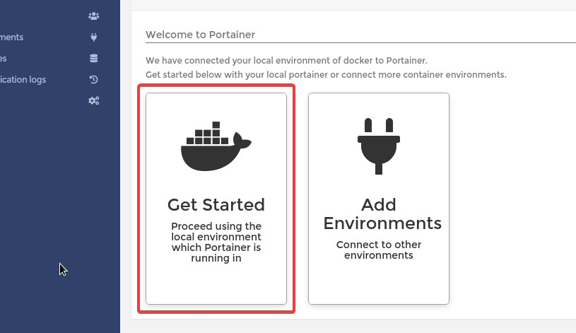
Click on the "local" machine
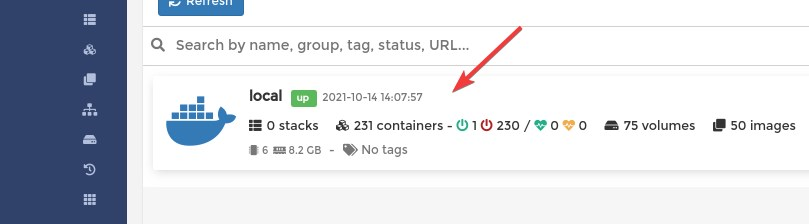
Create New Docker Network¶
By default there are three networks:
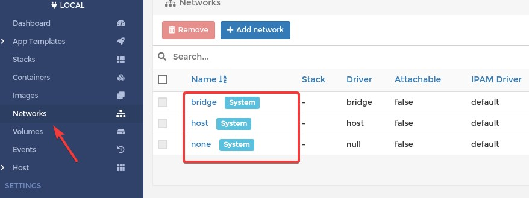
What you see is equialent to docker network ls command:
docker network ls
NETWORK ID NAME DRIVER SCOPE
e15c0c8f8d67 bridge bridge local
f728316f0193 host host local
54ac360308df none null localIf you need more details about a network use the inspect command:
docker inspect e15c0c8f8d67
[
{
"Name": "bridge",
"Id": "e15c0c8f8d67adc6b03876861c15c97bf581a97c75b9bedef7d48ecf6c906b0a",
"Created": "2021-10-01T11:25:52.320103343+02:00",
"Scope": "local",
"Driver": "bridge",
"EnableIPv6": false,
"IPAM": {
"Driver": "default",
"Options": null,
"Config": [
{
"Subnet": "172.18.0.0/16",
"Gateway": "172.18.0.1"
}
]
},
"Internal": false,
"Attachable": false,
"Ingress": false,
"ConfigFrom": {
"Network": ""
},
"ConfigOnly": false,
"Containers": {
"6c543ab5794bd752c29709a622f561a5d6647a071e802729ab8386759d3bcae6": {
"Name": "portainer",
"EndpointID": "b22b41e7e501de25a5b25d4320297224b5a87deb7c898c56ed0376af02c54917",
"MacAddress": "02:42:ac:12:00:02",
"IPv4Address": "172.18.0.2/16",
"IPv6Address": ""
}
},
"Options": {
"com.docker.network.bridge.default_bridge": "true",
"com.docker.network.bridge.enable_icc": "true",
"com.docker.network.bridge.enable_ip_masquerade": "true",
"com.docker.network.bridge.host_binding_ipv4": "0.0.0.0",
"com.docker.network.bridge.name": "docker0",
"com.docker.network.driver.mtu": "1500"
},
"Labels": {}
}
]Why should we create new network?
I want to emphasize two adventages:
- User-defined bridges provide automatic DNS resolution between containers
- You can enable manual container attachment
Hint
Inside a docker network it is absolutely not recommended to use static IP addresses for containers. It is antipatern. Use the container's name instead of the IP address when you have to connect containers to each other and put them into the same network.
Click on the "Add network" button.
- Name: Give a name to the new network. (custom_bridge)
- Driver: Bridge
- IPV4 Network configuration
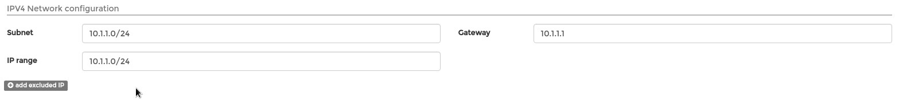
Info
IP range: Can differ from the Subnet. The containers will automatically get IP address from this range. (DHCP) Must be smaller than the entire Subnet.
- Enable manual container attachment: Turn On
This can achieve with cli command as well:
docker network create custom-cli \
--attachable \
--driver bridge \
--gateway 10.10.10.1 \
--ip-range 10.10.10.0/24 \
--subnet 10.10.10.0/24
You can decide which method (portainer or cli) is best for you.
Deploy App (Container) From Template¶
This is the easies way in Portainer to deploy an application. Choose "App Templates" from the menu, and click on Docker "Registry":

And Fill Name and Network, then click on "Deploy the container":
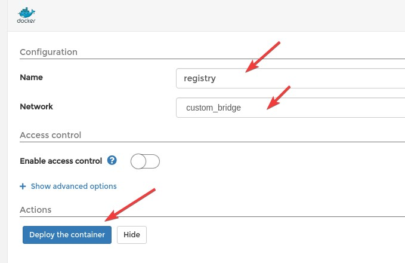
Chheck the container:
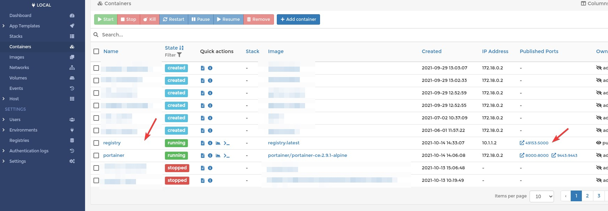
You can click on it and see all the details.
Try out our new docker Registry:
docker tag registry:latest 127.0.0.1:49153/registry/registry:v1
docker push 127.0.0.1:49153/registry/registry:v1
The push refers to repository [127.0.0.1:49153/registry/registry]
6da1e15d5d7f: Pushed
d385a2515a0f: Pushed
d661c8a70d1e: Pushed
02ada6f7a843: Pushed
39982b2a789a: Pushed
v1: digest: sha256:b0b8dd398630cbb819d9a9c2fbd50561370856874b5d5d935be2e0af07c0ff4c size: 1363We successfully pushed the locally stored portainer image to our new registry. Unfortunately there is no easy way the list the images form the custom registry. If you need a gui please check this: https://github.com/Joxit/docker-registry-ui
At the moment we don't have any other choice than use the API:
curl -s http://127.0.0.1:49153/v2/_catalog | jq
{
"repositories": [
"registry/registry"
]
}
curl -s http://127.0.0.1:49153/v2/registry/registry/tags/list | jq
{
"name": "registry/registry",
"tags": [
"v1"
]
}Deploy Single Container¶
We are going to deploy the registy ui, metioned in the previous chapter.
Docker HUB link: https://hub.docker.com/r/joxit/docker-registry-ui
Name, Registry An Port Mapping¶
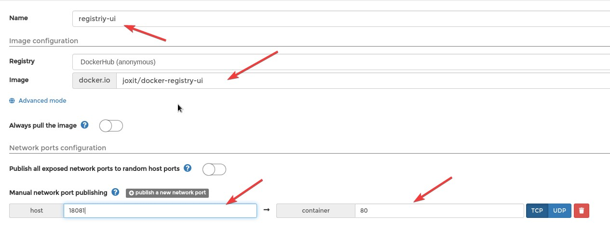
- Name: registriy-ui
- Registry: DockerHub
- Image: joxit/docker-registry-ui
- Always pull the image: OFF
- Publish all exposed network ports to random host ports: ON
- Publish Port 18081 --> 80
Important
You have to pull the image first, if you use always pull image: off
docker pull joxit/docker-registry-ui Or you can use the Portainer Image menu for pulling the image.
Do not use "Publish all exposed network ports to random host ports"! Every time the container restart new host port will be assigned!
Network¶
Use the previusly defined network:
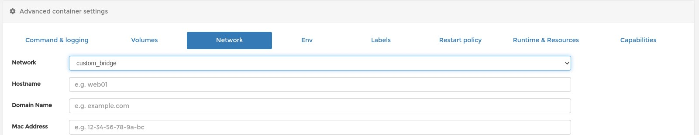
Environments¶
Check the official documentation on DockerHUB: https://hub.docker.com/r/joxit/docker-registry-ui
REGISTRY_URL=http://localhost:18081
REGISTRY_TITLE=Test Registry @ localhost
SHOW_CONTENT_DIGEST=true
SINGLE_REGISTRY=true
NGINX_PROXY_PASS_URL=http://registry:5000
Screenshot
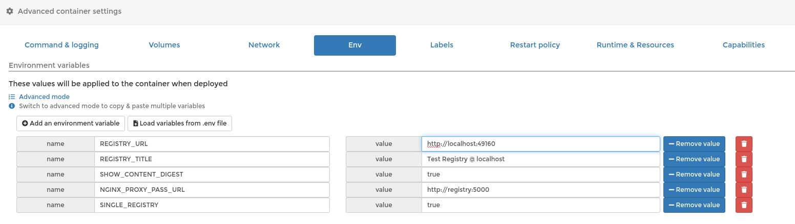
Warning
In the above screenshot the port number is wrong at REGISTRY_URL. The correct one is: REGISTRY_URL=http://localhost:18081
- REGISTRY_URL
Use the host on which you want to access your registry-ui. It should be the same as used in Docker port publishing (-p), or at portainer gui. Another example:
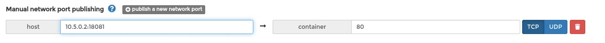
In this case the REGISTRY_URL should be http://10.5.0.2:18081.
- NGINX_PROXY_PASS_URL
The most important is attaching both the registry and registry-ui to the same network (custom_bridge)! In this way containers can access each other inside this network with there name.
For better understanding please see the following examples:
docker ps
CONTAINER ID IMAGE COMMAND CREATED STATUS PORTS NAMES
dcbf77aa6492 joxit/docker-registry-ui:latest "/docker-entrypoint.…" 11 minutes ago Up 11 minutes 0.0.0.0:18081->80/tcp registriy-ui
031ffbed2392 registry:latest "/entrypoint.sh /etc…" 4 hours ago Up 4 hours 0.0.0.0:49153->5000/tcp registry
6c543ab5794b portainer/portainer-ce:2.9.1-alpine "/portainer" 5 hours ago Up 5 hours 0.0.0.0:8000->8000/tcp, 0.0.0.0:9443->9443/tcp, 9000/tcp portainer
docker exec -it registriy-ui /bin/sh
curl -i http://registry:5000
HTTP/1.1 200 OK
Cache-Control: no-cache
Date: Thu, 14 Oct 2021 16:43:45 GMT
Content-Length: 0
docker exec -it registry /bin/sh
ping registriy-ui
PING registriy-ui (10.1.1.3): 56 data bytes
64 bytes from 10.1.1.3: seq=0 ttl=64 time=0.068 ms
64 bytes from 10.1.1.3: seq=1 ttl=64 time=0.098 ms
^C
--- registriy-ui ping statistics ---
2 packets transmitted, 2 packets received, 0% packet loss
round-trip min/avg/max = 0.068/0.083/0.098 msRegarding the port, inside a Docker network always use the port on which the process itself is listening on, NOT the published port. (0.0.0.0:49153->5000/tcp)
If you get error like this:
An error occured: Check your connection and your registry must have `Access-Control-Allow-Origin` header set to `http://127.0.0.1:18081`
This is likely becase the REGISTRY_URL is miss-configured.
If everything went good, the Registry-UI web should look like this:
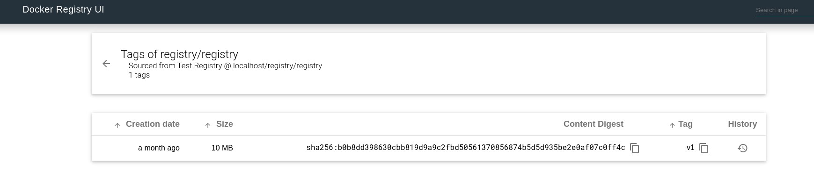
Stack (compose)¶
What Is The Problem With Single containers?
Deploying singe containers is suitable only for a quick test. Main problems:
- If you accidentally delete the container you loose all it's configuration (port mapping, environments, volume and network settings).
- You can not easily reproduce the container on another host
- If you need to connect two or more container to each other you must manually assign them to the same network, and even the network has to be created manually.
- Containers won't be backed up when you create Portainer backup.
The solution is docker-compose, or the the Portainer way = Stack. Create a Stack means writing a docker compose (yaml) file .
All we have done before can be defined in a single file:
version: "3"
services:
registry:
deploy:
replicas: 1
image: registry:latest
container_name: registry
restart: always
volumes:
- /var/lib/registry:/var/lib/registry
environment:
- TZ=Europe/Budapest
ports:
- 5000:5000
networks:
- registy
registry-ui:
deploy:
replicas: 1
image: joxit/docker-registry-ui:latest
container_name: registry-ui
ports:
- 18081:80
environment:
- REGISTRY_URL=http://localhost:18081
- REGISTRY_TITLE=Test Registry @ localhost
- SHOW_CONTENT_DIGEST=true
- SINGLE_REGISTRY=true
- NGINX_PROXY_PASS_URL=http://registry:5000
networks:
- registy
networks:
registy:
driver: bridge
ipam:
driver: default
config:
- subnet: "10.101.0.1/29"
Copy and paste this yaml to your Portainer:
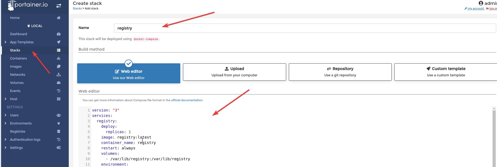
And Click "Deploy the stack" button.
This Stack will create a network:

And the Stack will look like this:
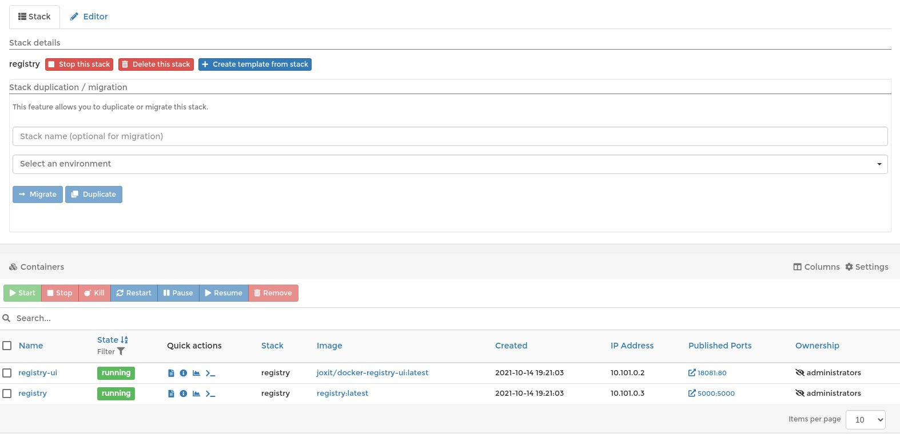
This yaml file can be used on any Portainer instance or without Portainer using the docker-compose cli tool.
Save the above yaml as docker-compose.yaml and start the containers:
docker-compose up -d
Creating network "registry_registy" with driver "bridge"
Creating registry-ui ... done
Creating registry ... done
You can stop the Stack with docker-compose down command.
Warning
You have to be in the directory which contains docker-compose.yaml file when running docker-compose command
Tip
Do not mix using docker-compose and Portainer Stack, unless you are brave enough. It won't cause any tehcnical problem, but very confusing, I think.
Stack With Git¶
When you are working on something for hours or days it become really important to have a backup of your work. In this case also important that your work could be reproducible on any other system (portability). Stack are very good start points. But how to track the modifications? How to make backups? Where to store our yaml files?
You can create backup from your portainer instance. (Setting / Backup configuration) But unfortunately scheduled backup available only for business users. Workaround could be saving the portainer data directory (/opt/docker/portainer/data).
Despite backup we still need track the modifications.
Portainer has a great feature: We can use a git repository for creating stacks. I absolutely recommend everybody to use Git repository to store the Stack (comopse) files.
Example:
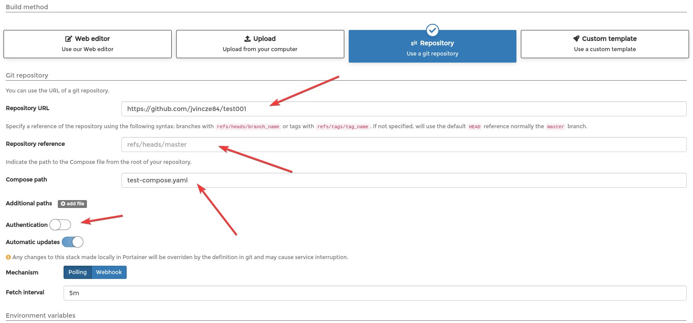
Tip
You can use any Git based repository not just Github (eg.: Self hosted Gitea)
If your repository protected with username and password, don't forget to enable "Authentication" and provide you credentials.
Install Portainer On Kubernetes¶
Installation documantation: https://docs.portainer.io/v/ce-2.9/start/install/server/kubernetes/baremetal
Before you install Portainer on the top of your Kubernetes cluster you have to deploy one persistent storage provider.
Persistent Storage¶
In this article I don't want to bother too much with this topic, therefore I chose a minimal installation of OpenEBS.
Link: https://docs.openebs.io/docs/next/uglocalpv-hostpath.html
Deploy the operator:
kubectl apply -f https://openebs.github.io/charts/openebs-operator-lite.yaml
Download the StorageClass manifest:
wget https://openebs.github.io/charts/openebs-lite-sc.yaml
And remove the second StorageClass (openebs-device). Or you can use this snippet:
cat <<EOF>openebs-lite-sc.yaml
apiVersion: storage.k8s.io/v1
kind: StorageClass
metadata:
name: openebs-hostpath
annotations:
openebs.io/cas-type: local
cas.openebs.io/config: |
#hostpath type will create a PV by
# creating a sub-directory under the
# BASEPATH provided below.
- name: StorageType
value: "hostpath"
#Specify the location (directory) where
# where PV(volume) data will be saved.
# A sub-directory with pv-name will be
# created. When the volume is deleted,
# the PV sub-directory will be deleted.
#Default value is /var/openebs/local
- name: BasePath
value: "/openebs/local/"
provisioner: openebs.io/local
volumeBindingMode: WaitForFirstConsumer
reclaimPolicy: Delete
EOF
Apply:
kubectl apply -f openebs-lite-sc.yaml
You can check if it is working:
kubectl apply -f https://openebs.github.io/charts/examples/local-hostpath/local-hostpath-pvc.yaml
kubectl apply -f https://openebs.github.io/charts/examples/local-hostpath/local-hostpath-pod.yaml
kubectl get pvc
NAME STATUS VOLUME CAPACITY ACCESS MODES STORAGECLASS AGE
local-hostpath-pvc Bound pvc-dda89e6e-43e6-4552-8985-9564b95f5e9a 5G RWO openebs-hostpath 27mDefault StorageClass¶
Portainer needs default Storage Class. But the openebs-hostpath is not annotated as default:
kubectl get sc
NAME PROVISIONER RECLAIMPOLICY VOLUMEBINDINGMODE ALLOWVOLUMEEXPANSION AGE
openebs-hostpath openebs.io/local Delete WaitForFirstConsumer false 25mFix this:
kubectl patch storageclass openebs-hostpath -p '{"metadata": {"annotations":{"storageclass.kubernetes.io/is-default-class":"true"}}}'
And check again:
kubectl get sc
NAME PROVISIONER RECLAIMPOLICY VOLUMEBINDINGMODE ALLOWVOLUMEEXPANSION AGE
openebs-hostpath (default) openebs.io/local Delete WaitForFirstConsumer false 27mDeploy Portainer¶
kubectl apply -n portainer -f https://raw.githubusercontent.com/portainer/k8s/master/deploy/manifests/portainer/portainer.yaml
Now we have to figure out on which port the Portainer is accessible (nodePort):
kubectl -n portainer get svc
NAME TYPE CLUSTER-IP EXTERNAL-IP PORT(S) AGE
portainer NodePort 10.22.142.7 9000:30777/TCP,9443:30779/TCP,30776:30776/TCP 2m31s The winner is: 9443:30779/TCP
Now you can access Portainer on every Kubernetes node using the port number 30779. (http://172.16.1.214:30779)
Final Thoughts¶
I think Portainer can be a very helpful tool for everyone who whats to work with containers, but for managing Kubernetes cluster I think there are bertter software. I always like to see the Kubernetes objects ("Kinds") as they are. I like Kubernetes Dashboard much more than Portainer for managing my cluster, but everybody has different taste. I advise to try Kubernetes Dashboard, Rancher, Portainer, K8Sdash and so on, and choose what you really liked.
But, if you just now getting familiar to Containers I think Portainer can help you to understand how Networks/Volumes/Stack/Swarms/Images/etc work. Most people like to see things on a graphical interface not just the CLI, this is where the Portainer is great. But I think CLIs (kubectl, oc, docker-compose, docker) are the most powerfull tools, if you are willing to learn them. All the outputs can be piped to grep, sed, jq, etc, and you can write scripts to automate your daily work or process the outputs.